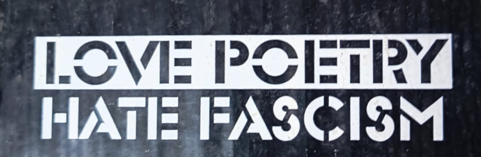
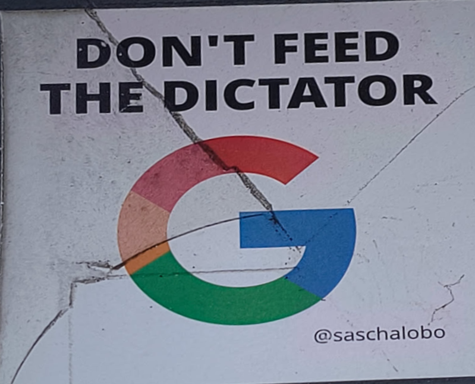

Das ist die mini homepage an der ich alle paar monate mal was mache weil irgendwas muss ich ja als ho muss ich ja als homepage haben
Dev.wales ist ein cooles project das jedem der nett fragt (pr) ne subdomain gibt meine für diese seite ist jay.dev.wales


!check out !
Check out Archive.org beacuse archiving things is very important for democracy
Check out zed weil es besser als vscode slop ist